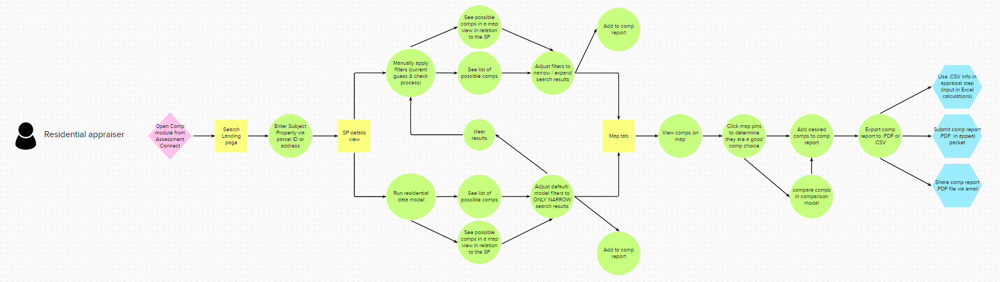
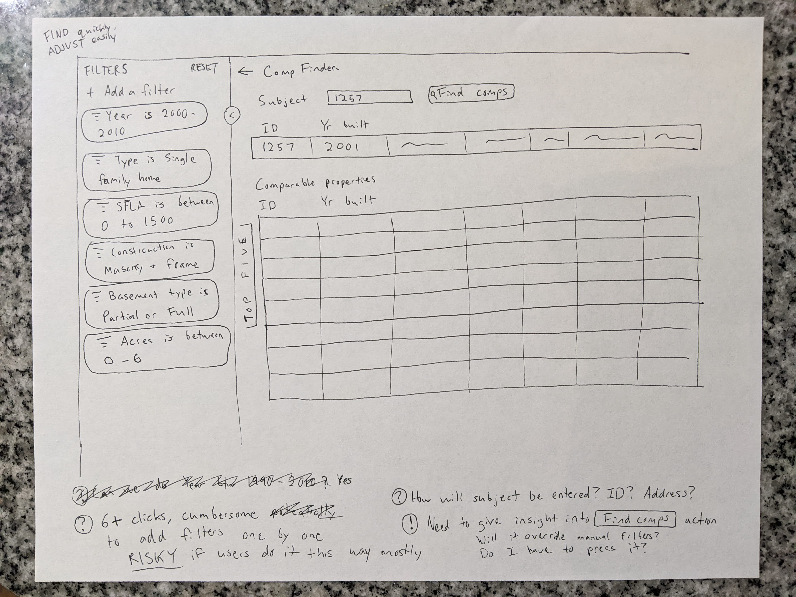
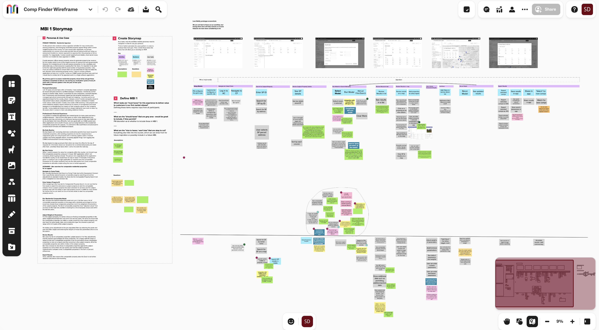

Property Comparison
February 2023 - July 2023

The Problem
Finding comparison properties is key to accurately determining value, but property data in the state of Kansas is siloed by county. Assessors must make phone calls or sometimes even drive to other counties to explore comparison options.
Additionally, annual property appeals can take months to sort through due to the time-intensive nature of assembling comparisons.
Case Study Details
Team:
1 designer, 1 project manager, offshore development team; Project handed off to another designer after MBI 1 high fidelity designs were finishedMy role:
Designer, user researcherProcesses:
User interviews, persona creation, sketching, wireframes, mockups, prototypingThe Solution
By aggregating all property data of Kansas's 105 counties into one tool, all property assessors in the state will have greater access to make accurate comparisons.
Assessors will have the flexibility to search how they choose, utilizing a machine learning model to quickly generate suggestions or searching via manual filtering if they prefer.
After finding suitable comparison properties, assessors can easily export them to a "comp sheet", which is a report format appropriate for the appeals process.
Process
Discovery Research
Though state-wide data aggregation is an obvious win from the start, we wanted to explore opportunities to further improve the property assessment process.
Through our initial discovery interviews, we honed in on the appeals process as a major pain point - it is a costly and time-intensive task that takes up a large chunk of the year, every year.
We also identified differences in how residential and commercial properties are appraised. Commercial structures are often unique, which means there is greater value in having access to data from other counties.
A common thread in all interviews was how many different tools appraisers use. We identified an opportunity for streamlining if we could pull in maps and images of the properties to lessen the need for application swapping.
{kind=link}
Sketching and wireframes
Following discovery research and the creation of our residential and commercial personas, we honed in on the residential appraiser as the target persona for MBI 1.
I created a user flow diagram for the residential appraiser, along with low fidelity sketches. I explored different paths for manual filtering and providing algorithm suggested results. Wireframes were created for our storymapping exercise, to communicate the general concept to stakeholders and other participants.
  {kind=link}
{kind=link}
{kind=link}
Design iteration
Storymapping helped us arrive at a feature set target for MBI 1. At this point, I began to iterate on the designs and work out the remaining questions about how users would move through the comparison tool.
After nailing down the branching path of algorithm suggestions vs manual filtering, I explored different display options for showing the selected properties. Our final export option was mostly set in stone, due to how appeals packets are structured, but I wanted to be open to different displays while switching between the table and map view.
I explored design patterns for checkout experiences and other comparison layouts, such as online car shopping and comparing hotels. I eventually settled on an overlay at the bottom of the screen when properties were selected.
{kind=link}
Clickable prototype
As part of the high fidelity designs, I created a clickable prototype using Figma. This allowed me to demonstrate navigation, behavior when adding/removing comparisons, and the way the tool would be behave when swapping between the table and map view.
After the completion of the high fidelity designs for MBI 1, another designer took over the project to see it through to launch. Below is the video of my finished prototype, which you can compare to the launched design video at the top of the page.
Reflections
The Property Comparison module is an exciting demonstration of the value provided by aggregated data. With access to better data and modern tools, county assessors can save hundreds of hours. Our hope is also that more accurate intial valuations can reduce overall appeal volume, saving further time for both assessors and property owners.